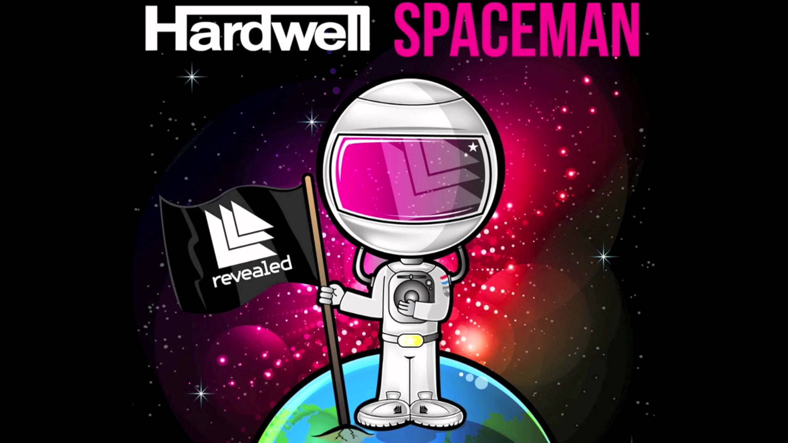
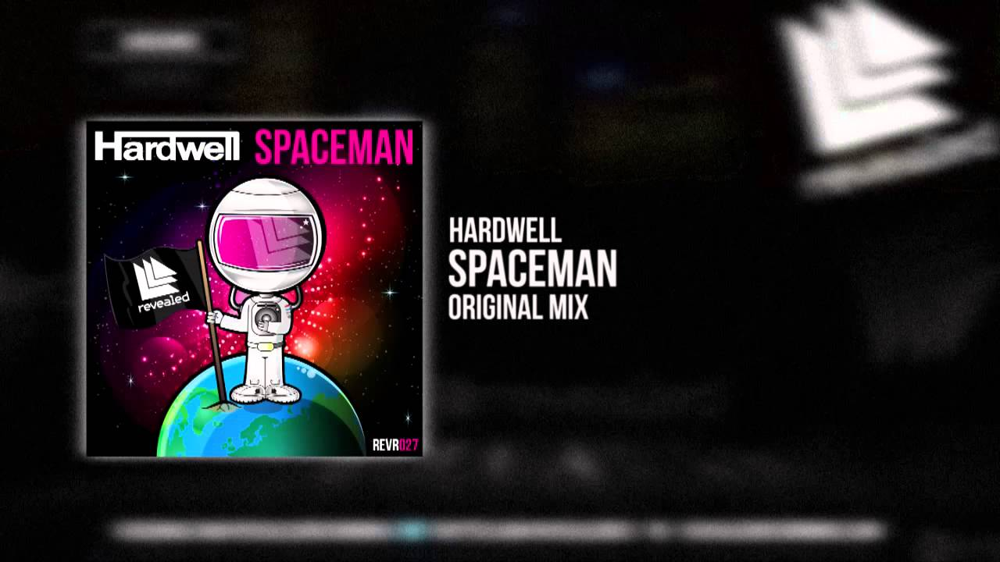
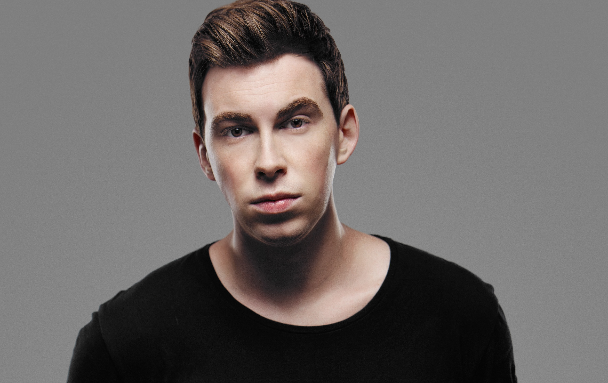
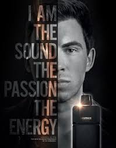

Spaceman
Se realizó una versión vocal de la canción
llamada, «Call Me A Spaceman», que cuenta
con la voz de Mitch Crown, lanzada el
18 de mayo de 2012 Hasta ahora, es el sencillo
más exitoso en toda la carrera de
Robbert (Hardwell) como productor.
|

Hardwell es muy conocido por su exitoso
sencillo llamado "Spaceman" y por sus
actuaciones en directo en los principales
festivales, como Ultra Music Festival y
Tomorrowland. También por su Podcast
"Hardwell On Air" el cual está disponible
en iTunes, YouTube, entre varias plataformas mas
|

Perfume
Su vida es el ritmo, la energía, la fiesta.
No es solo un DJ, simboliza los estilos de
vida de toda una generación. La segunda vez
que se elige a Dj # 1 del mundo ahora presenta
un perfume único que se transforma en una
fragancia energética: ECLIPSE. Al crear esta
fragancia, el neerlandés nacido se convierte
en una fase completamente nueva, en la que
él es la cara de una fragancia, tan brillante
como DJ. El poder y la sensación de su música cobran
vida en su fragancia y será una fuente de inspiración.
|